Network Technologies Report
Theoretical Part 1: DNS & Mail Systems
1.1. DNS System
1.1.1 List of Top-Level Domains
Top-Level Domains (TLDs) represent the highest level of the domain name system hierarchy directly under the root zone. They are categorized into several types:
- Generic TLDs (gTLDs): Used for general purposes (e.g.,
.com,.org,.net,.info). - Country-Code TLDs (ccTLDs): Assigned to specific countries or territories (e.g.,
.plfor Poland,.esfor Spain,.ukfor the UK). - Sponsored TLDs (sTLDs): Proposed and supervised by private agencies or organizations (e.g.,
.edufor education,.govfor US government).
1.1.2 Hierarchical structure, Queries, and Delegation
Hierarchy: DNS is structured like an inverted tree. At the top is the Root (.), followed by TLDs (.com), Second-Level Domains (example.com), and Subdomains (mail.example.com).
DNS Queries:
- Recursive: The client asks the resolver to fetch the full answer. The resolver queries all necessary servers on behalf of the client.
- Iterative: A server replies with the best answer it currently knows, usually a referral to a lower-level DNS server, without doing the full lookup itself.
DNS Delegation: The process where a parent domain assigns the authority of a subdomain to a different set of name servers using NS (Name Server) records.
1.1.3 DNS Records, Forward and Reverse DNS
Common DNS Records:
A: Maps a hostname to an IPv4 address.AAAA: Maps a hostname to an IPv6 address.MX: Specifies the mail servers responsible for accepting email for the domain.CNAME: Creates an alias pointing from one domain name to another.
DNS vs Reverse DNS: Forward DNS translates a human-readable hostname into an IP address. Reverse DNS (rDNS) does the exact opposite, translating an IP address back into a hostname using PTR records within the in-addr.arpa domain.
1.1.4 Authoritative vs. Non-authoritative Answers
Authoritative Answer: This response comes directly from a name server that holds the original zone file and has been officially delegated to host the specific DNS records for that domain. It is the definitive source of truth.
Non-authoritative Answer: This response comes from a DNS resolver's cache. The resolver previously looked up the record and saved it to speed up future queries, but it is not the official host of the domain.
1.1.5 DNS Resolver, Cache, and /etc/hosts
DNS Resolver: The client-side component (or server acting on a client's behalf) that initiates the queries across the DNS infrastructure to resolve a hostname.
DNS Cache: A temporary database maintained by resolvers or operating systems that stores recent DNS lookups based on their Time-To-Live (TTL) to reduce network traffic and latency.
/etc/hosts: A local, plaintext file on an operating system used to map IP addresses to hostnames manually. The OS typically checks this file before querying the external DNS system, making it useful for local overrides.
1.2. Mail System
1.2.1 POP3, IMAP, SMTP and Client-Server Communication
- SMTP (Simple Mail Transfer Protocol): Used for sending emails from a client to a server, or routing between servers (Ports: 25, 587, 465). Basic commands:
HELO/EHLO,MAIL FROM,RCPT TO,DATA,QUIT. - POP3 (Post Office Protocol v3): Used for retrieving emails. It usually downloads the messages to the local device and deletes them from the server (Ports: 110, 995).
- IMAP (Internet Message Access Protocol): Used for accessing and syncing emails across multiple devices while leaving the primary copies on the server (Ports: 143, 993).
1.2.2 NNTP Protocol
NNTP (Network News Transfer Protocol): An application protocol primarily used for reading and posting articles to Usenet newsgroups. It is designed to distribute news articles among news servers and allow clients to access them.
1.2.3 Mailbox, Parameters, Aliases, Address
An E-mail Address (e.g., user@example.com) defines the destination. The Mailbox is the actual storage space on the server where incoming messages for that address are saved. Aliases are virtual email addresses that do not have their own mailbox; instead, they automatically forward incoming messages to a primary, existing mailbox.
1.2.4 E-mail Structure: Header, Separator
An email consists of two main parts separated by a strict boundary:
- Header: Contains routing metadata and attributes such as
To:,From:,Subject:, andDate:. - Separator: A single, mandatory empty line (a Carriage Return Line Feed sequence:
CRLF CRLF) that clearly indicates where the header ends and the message begins. - Body: The actual content of the email.
1.2.5 Attachments, E-mail Coding, and MIME
Original email protocols only supported 7-bit ASCII text. MIME (Multipurpose Internet Mail Extensions) was introduced to allow emails to carry non-text formats (images, PDFs) and multiple parts. Because SMTP still requires text, attachments are encoded using algorithms like Base64 to convert binary data into safe ASCII characters for transmission.
1.2.6 Mailing Lists and E-mail Gates
Mailing Lists: A system that allows a single sender to distribute one message to a large group of subscribed recipients using a single email address.
E-mail Gate (Gateway): A server or software component that acts as a translator between different email systems or networks that use incompatible protocols, ensuring messages can cross between them seamlessly.
1.2.7 Security: SSL, TLS, PGP, Signature
- SSL/TLS: Cryptographic protocols used to encrypt the transport layer connection between client and server, preventing eavesdropping over the network.
- PGP (Pretty Good Privacy): Uses public-key cryptography to provide end-to-end encryption for the email content itself.
- Digital Signatures: Used to verify the authenticity of the sender and ensure that the message content has not been tampered with in transit (providing non-repudiation and integrity).
1.2.8 Spam, Blacklists, Graylists, Filtering
- Spam: Unsolicited, bulk emails, often containing advertisements, phishing attempts, or malware.
- Blacklists (DNSBL): Real-time databases of IP addresses known to send spam. Mail servers reject connections from these IPs.
- Graylists: A defense mechanism that temporarily rejects emails from unrecognized senders. Legitimate mail servers will automatically retry sending after a few minutes, while spam bots typically drop the connection and do not retry.
- Spam Filtering: Software that analyzes the content, headers, and behavior of emails (often using Bayesian logic or machine learning) to score and quarantine suspicious messages.
2.1. DNS System (Practical Part)
2.1.1 Displaying and Changing DNS Settings
First, I opened the command prompt and ran ipconfig /all to verify my initial network configuration. My default DNS server was assigned by my local network at 10.239.192.1. To modify this, I navigated to the Network and Sharing Center to access my active WiFi connection (ASK4 WiFi).
In the connection properties, I selected Internet Protocol Version 4 (TCP/IPv4) and changed the DNS server addresses to use Google's Public DNS: 8.8.8.8 as preferred and 8.8.4.4 as alternate.
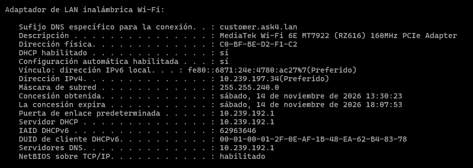
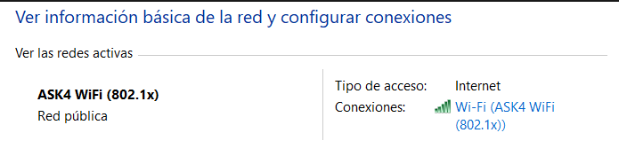

2.1.2.1 Domain: lodz.pl
I used the nslookup tool to query the lodz.pl domain. The basic query returned the IP address 65.21.171.62. Following that, I ran an NS type query (nslookup -type=ns lodz.pl) which successfully revealed the domain's authoritative name servers, such as dns2.man.lodz.pl.
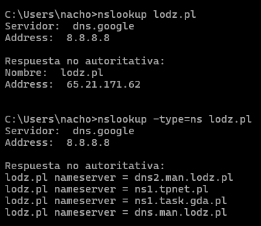
2.1.2.2 Domain in Europe (Outside Łódź)
For a European host outside of Łódź, I selected the Complutense University of Madrid in Spain (ucm.es). Using nslookup -type=any ucm.es, the Google DNS server returned a non-authoritative answer providing its internet address: 147.96.2.159.
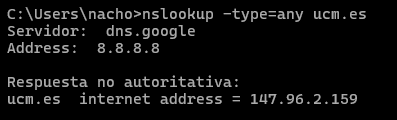
2.1.2.3 Domain Outside Europe (Exotic Country)
To examine a host outside of Europe, I chose the University of Tokyo in Japan (u-tokyo.ac.jp). By executing nslookup -type=any u-tokyo.ac.jp, I was able to retrieve extensive DNS records, including the primary name servers (e.g., dns1.nc.u-tokyo.ac.jp), MX records for mail routing, and SPF text records.
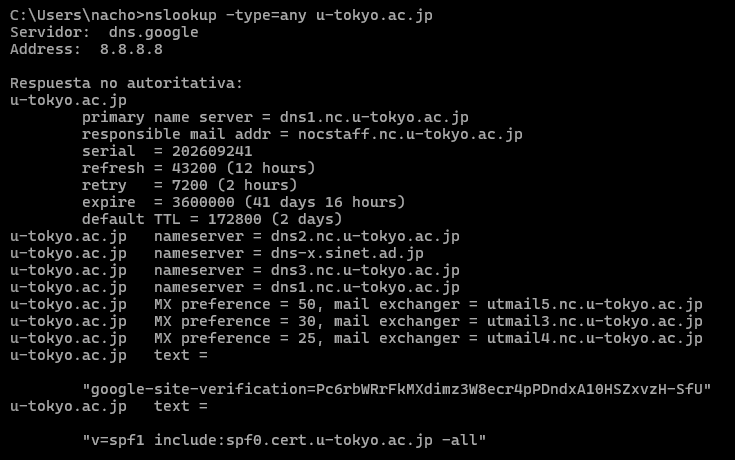
2.1.2.4 Verify DNS assignment for localhost
I attempted to query localhost using nslookup. As expected, the Google DNS server returned a "Non-existent domain" error. This happens because localhost is a loopback address handled internally by the operating system, and public external DNS servers like 8.8.8.8 do not hold records for internal local addresses.
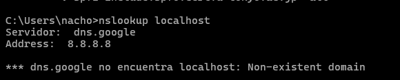
2.1.2.5 Flush the DNS Memory
To ensure my system wasn't relying on outdated cached entries, I cleared the local DNS cache by executing ipconfig /flushdns. The terminal confirmed that the DNS Resolver Cache was successfully flushed.
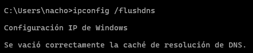
2.1.2.6 Changing the Hosts File for Redirect
For the final task, I needed to redirect a custom domain (based on my IFE group 26) to the MSN website. First, I found MSN's IP address. Then, I opened the C:\Windows\System32\drivers\etc\hosts file as an administrator and appended the following line: 204.79.197.219 ife26.com.
Upon opening a browser and navigating to http://ife26.com, the local OS bypassed public DNS and routed my request directly to the MSN IP. Because the HTTP Host header sent (ife26.com) did not match what the MSN server expected, it returned a raw text 503 Service Unavailable error page. This successfully proves that the local DNS spoofing/redirection worked.
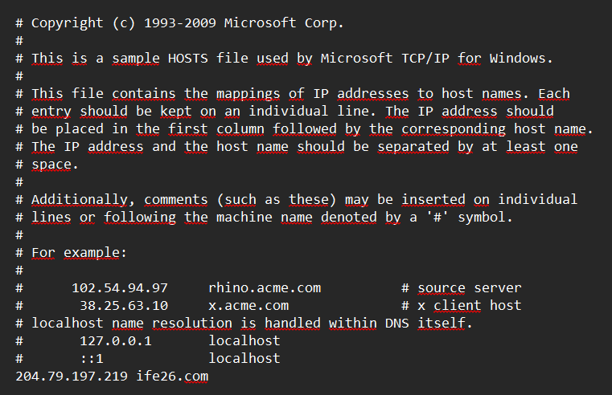
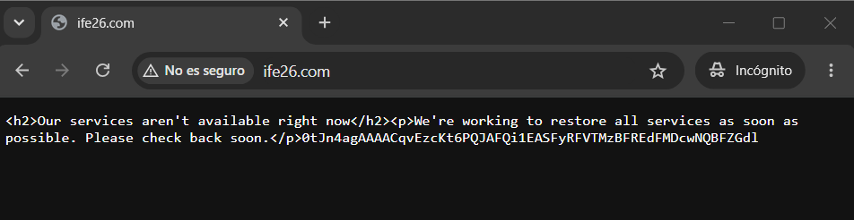
2.2. Mail System Practical Tasks
2.2.1 Configure Thunderbird
To successfully complete the practical tasks from an external network and bypass local firewall restrictions on unencrypted ports, Thunderbird was configured using a personal Gmail account. The connection relies on IMAP over port 993 (SSL/TLS) for incoming mail and SMTP over port 465 (SSL/TLS) for outgoing mail, authenticated via OAuth2.
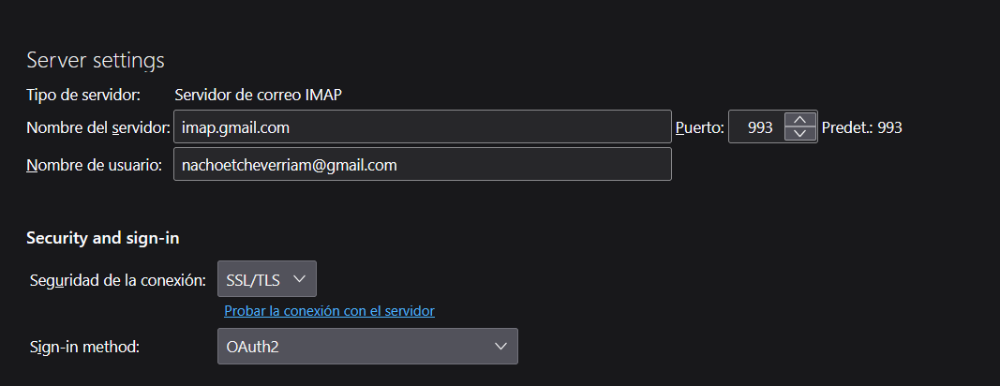
2.2.2 E-mail Bounces
To analyze how servers handle delivery failures, three specific test emails were sent to trigger automated bounce messages (Delivery Status Notifications).
2.2.2.1. A non-existent mail server
An email was sent to a fabricated domain. The DNS lookup failed to find any associated records (NXDOMAIN), resulting in an immediate rejection by the mail delivery subsystem.

2.2.2.2. A non-existent user on an existent e-mail server
An email was directed to a fabricated username at a valid domain (lodz.pl). The receiving server recognized the domain but rejected the message with a "550 Unrouteable address" error because the inbox does not exist.

2.2.2.3. A server which is not an e-mail server
An email was sent to example.com, a domain that exists but is explicitly configured not to receive emails (Null MX record). The server immediately rejected the connection based on this DNS configuration.

2.2.3 Wireshark Analysis
Traffic was captured while Thunderbird synchronized the inbox and sent an email. Because the Gmail configuration enforces strict encryption, the standard plaintext SMTP and IMAP commands are not visible. Filtering the capture by tcp.port == 465 (SMTP over SSL) and tcp.port == 993 (IMAP over SSL) reveals the encrypted TLSv1.2 and TLSv1.3 application data, demonstrating how modern email providers secure communication.
SMTP Traffic (Port 465)
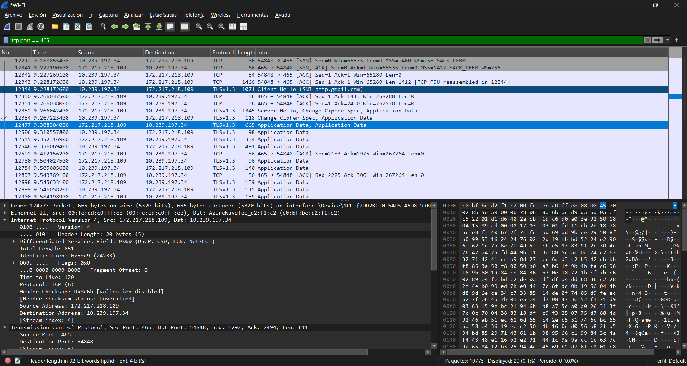
IMAP Traffic (Port 993)
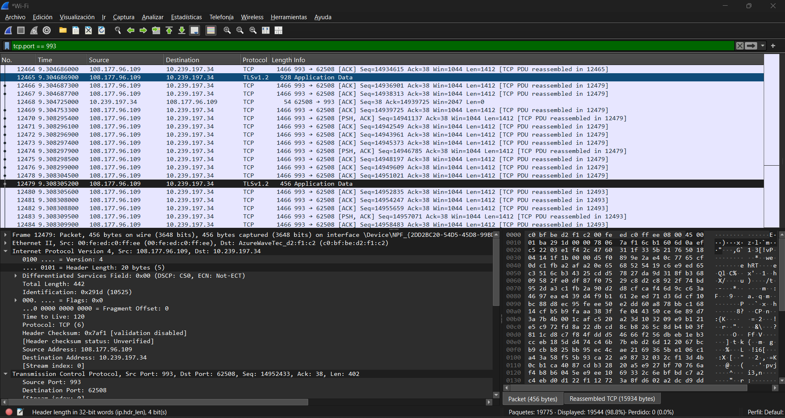
2.2.4 Sending an e-mail using Telnet
An attempt was made to manually connect to the university's SMTP server (studife.cti.p.lodz.pl) on port 25 via the command line interface. As demonstrated in the capture below, the connection was silently dropped (timeout). This occurs because external networks and residential ISPs typically block outbound traffic on port 25 to prevent spam, and the university firewall restricts unencrypted external access to this port.
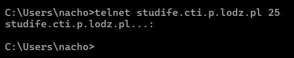
Summary Conclusions
This practical assignment provided a comprehensive overview of fundamental network technologies, specifically focusing on the Domain Name System (DNS) and the Mail System. The tasks demonstrated how domain names are translated into IP addresses and highlighted the critical role of caching and local routing files, such as the Windows hosts file, in overriding default DNS behaviors.
The Mail System analysis highlighted the transition from legacy plaintext protocols to modern encrypted standards. While initial attempts to connect to the university's unencrypted SMTP and IMAP ports were successfully diagnosed as being blocked by external network firewalls and port 25 restrictions, pivoting to a modern provider (Gmail) allowed for the successful generation of Delivery Status Notifications (bounces). Finally, the Wireshark captures illustrated the encapsulation of mail protocols within TLS tunnels, emphasizing the importance of encryption in contemporary network security.